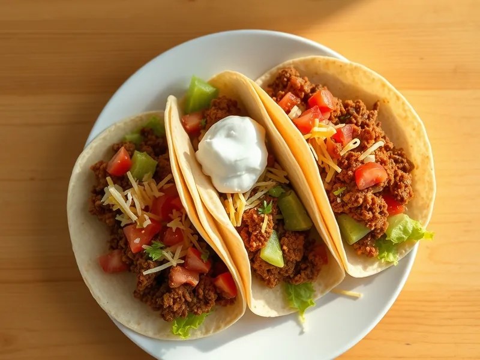

Фото: Иллюстрация ИИ, Cloudflare Workers AI
Тако с говяжьим фаршем
Тёплые тортильи с пряным фаршем, помидором, салатом, сыром и сметаной
25 мин2 порц.786 ккал на порциюБ 33 · Ж 41 · У 69Американская кухня
Открыть в приложении: порции, таймеры, список покупок
Продукты на 2 порц.
- Пшеничные тортильи4 шт
- Говяжий фарш180 г
- Лук репчатый1 шт
- Помидоры1 шт
- Салат листовой40 г
- Сыр твёрдый40 г
- Сметана 20%2 ст. л.
- Зира0,5 ч. л.
- Паприка1 ч. л.
- Растительное масло2 ч. л.
- Соль1 щеп.
- Острый перец молотый по желаниюпо вкусу
Как готовить
- Нарежьте лук мелко, помидор кубиком, салат полосками, сыр натрите, 5 минут.
- Разогрейте масло на сковороде на сильном огне, жарьте лук 2 минуты, добавьте фарш и жарьте 7 минут, разбивая комки, пока он не станет коричневым.
- Добавьте зиру, паприку, чили, соль и 2-3 ст. л. воды, протушите 2 минуты на среднем огне до густоты.
- Прогрейте тортильи на сухой сковороде по 30 секунд с каждой стороны, чтобы они стали мягкими.
- Выложите на каждую тортилью фарш, помидор, салат, сыр и сметану, сложите пополам и сразу подавайте.
Совет. Прогретая тортилья не ломается при сгибании. Без чили блюдо подходит детям, острое добавляйте каждому в тарелку отдельно.